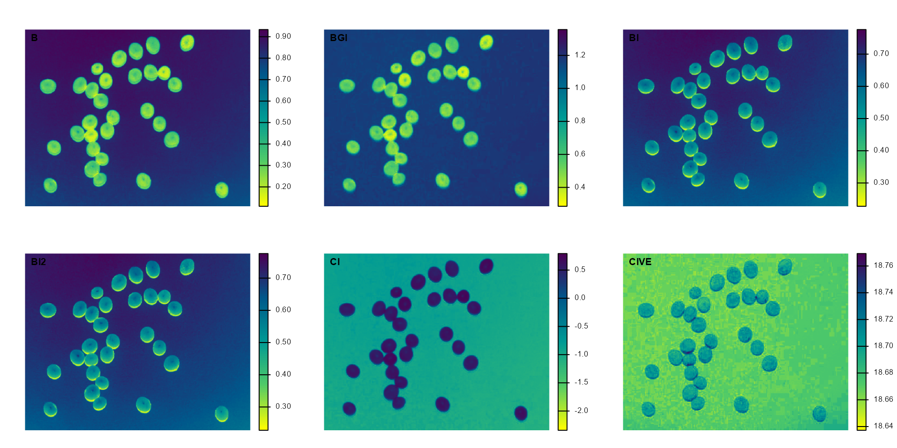
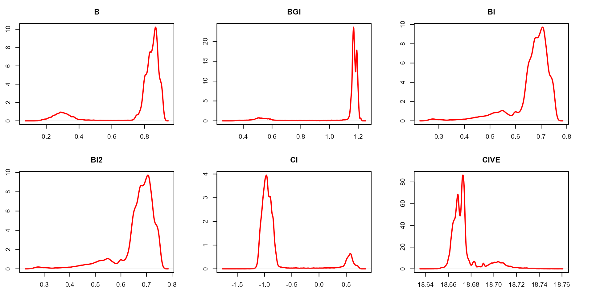

Image segmentation with pliman
Tiago Olivoto
2024-10-22
Source:vignettes/segmentation.Rmd
segmentation.RmdGetting started
Image segmentation is the process of partitioning a digital image
into multiple segments (sets of pixels or image objects). In the context
of plant image analysis, segmentation is used to simplify the
representation of an image into something easier to analyze. For
example, when using count_objects() to count crop grains,
first the grains need to be isolated (segmented) from the background. In
pliman the following functions can be used to segment an
image.
In pliman the following functions can be used to segment
an image.
-
image_binary()to produce a binary (black and white) image -
image_segment()to produce a segmented image (image objects and a white background). -
image_segment_iter()to segment an image iteratively.
Both functions segment the image based on the value of some image
index, which may be one of the RGB bands or any operation with these
bands. Internally, these functions call image_index() to
compute these indexes. The following indexes are currently
available.
Here, I use the argument index" to test the segmentation
based on the RGB and their normalized values. Users can also provide
their own index by explicitly providing the formula. e.g.,
index = "R-B".
library(pliman)
#> |======================================================|
#> | Welcome to the pliman package (version 3.0.0)! |
#> | Developed collaboratively by NEPEM - nepemufsc.com |
#> | Group lead: Prof. Tiago Olivoto |
#> | For citation: type `citation('pliman')` |
#> | We welcome your feedback and suggestions! |
#> |======================================================|
soy <- image_pliman("soybean_touch.jpg")
# Compute the indexes
# Only show the first 6 to reduce the image size
indexes <- image_index(soy, index = pliman_indexes_rgb()[1:6], plot = FALSE)
# Create a raster plot with the RGB values
plot(indexes)
# Create a density plot with the RGB values
plot(indexes, type = "density")
In this example, we can see the distribution of the RGB values (first row) and the normalized RGB values (second row). The two peaks represent the grains (smaller peak) and the blue background (larger peak). The clearer the difference between these peaks, the better will the image segmentation.
Segment an image
The function image_segmentation() is used to segment
images using image indexes. In this example, I will use the same indexes
computed below to see how the image is segmented. The output of this
function can be used as input in the function
analyze_objects().
segmented <- image_segment(soy, index = c("R, G, B, NR, NG, NB"))
plot(segmented$NB)It seems that the "NB" index provided better
segmentation. "R" and "NR" resulted in an
inverted segmented image, i.e., the grains were considered as background
and the remaining as ‘selected’ image. To circumvent this problem, we
can use the argument invert in those functions.
image_segment(soy,
index = c("R, NR"),
invert = TRUE)Iterative segmentation
The function image_segment_iter() provides an iterative
image segmentation, returning the proportions of segmented pixels. This
is useful when more than one segmentation procedure is needed. Users can
choose how many segmentation perform, using the argument
nseg.
seg_iter <- image_pliman("sev_leaf_nb.jpg", plot = TRUE)Using a soybean sample leaf (above), I will use the function
image_segment_iter to segment the diseased tissue from
healthy tissue. The aim is to segment the symptoms into two classes,
namely, necrosis (brown areas) and chlorosis (yellow areas), and compute
the percentage of each symptom class. The "VARI" seems to
be a suitable index to segment symptoms (necrosis and chlorosis) from
healthy tissues. The "GLI" can be used to segment necrosis
from chlorosis. Knowing this, we can now use
image_segment_iter() explicitly indicating these indexes,
as follows
image_segment_iter(seg_iter,
nseg = 2, # two segmentations
index = c("VARI", "GLI"),
ncol = 3)
#> image pixels percent
#> 1 original 1317600 100.00000
#> 2 seg1 397044 30.13388
#> 3 seg2 102621 25.84625It can be observed that 30.28% of the original image were characterized as symptoms (both necrosis and chlorosis). Of out this (symptomatic area), 25.92% are necrotic areas. So 7.85% of the total area were considered as necrotic areas (30.288 0.2592 or 103464/1317600 100) and 22.43% (30.28 - 7.85 or (399075 - 103464) / 1317600 100) were considered as chlorotic areas.
Users can use the argument threshold to controls how
segmentation is made. By default (threshold = "Otsu"), a
threshold value based on Otsu’s method is used to reduce the grayscale
image to a binary image. If a numeric value is informed, this value will
be used as a threshold. Inform any non-numeric value different than
"Otsu" to iteratively chosen the threshold based on a
raster plot showing pixel intensity of the index. For
image_segmentation_iter(), a vector (allows a mixed
(numeric and character) type) with the same length of nseg
can be used.
seg_iter1 <-
image_segment_iter(seg_iter,
nseg = 2, # two segmentations
index = c("VARI", "GLI"),
threshold = c(0, "Otsu"),
ncol = 3,
plot = FALSE)
#> image pixels percent
#> 1 original 1317600 100.00000
#> 2 seg1 103605 7.86316
#> 3 seg2 82395 79.52802
seg_iter2 <-
image_segment_iter(seg_iter,
nseg = 2, # two segmentations
index = c("VARI", "GLI"),
threshold = c(0.5, "Otsu"),
ncol = 3,
plot = FALSE)
#> image pixels percent
#> 1 original 1317600 100.00000
#> 2 seg1 321999 24.43830
#> 3 seg2 101175 31.42091
image_combine(seg_iter1$images$seg1,
seg_iter2$images$seg1)Users can then set the argument threshold for their
specific case, depending on the aims of the segmentation.
Producing a binary image
We can also produce a binary image with image_binary().
Just for curiosity, we will use the indexes "B" (blue) and
"NB" (normalized blue). By default,
image_binary() rescales the image to 30% of the size of the
original image to speed up the computation time. Use the argument
resize = FALSE to produce a binary image with the original
size.
binary <- image_binary(soy)
# original image size
image_binary(soy,
index = c("B, NB"),
resize = FALSE)